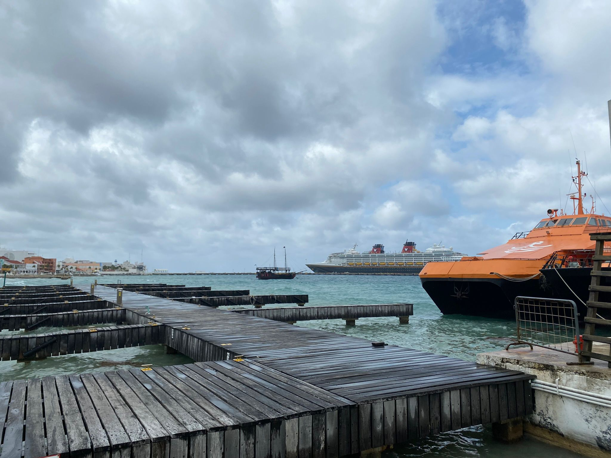

Playa Del Carmen is a jewel along Mexico’s Riviera Maya.
The beaches, the water, the amenities, and the nightlife are just
few of the things that make Playa del Carmen a top Mexican Caribbean destination.
When we were at Playa Del Carmen me and my wife had absolutely alot of fun!.
For more info about Playa Del Carmen: Click Here

Flash forward 2,000 years, and today Cozumel
is an exciting tourist destination that holds a special place in our hearts.
With two very different sides to the beautiful island, one can access all the modern
amenities around its main town of San Miguel, and yet still find numerous places
on the far side of the island to get away from it all.
For more info about Cozumel: Click Here
Cancun is a lively city nestled on Mexico’s Yucatan Peninsula
overlooking the Caribbean Sea. It’s divided into two parts:
the original downtown area with bustling markets, authentic restaurants and verdant parks
and the Zona Hotelera, or Hotel Zone. The latter caters to domestic and international tourists
with white sand beaches, modern shopping malls, myriad eateries, and fabulous nightlife.
For more info about Cancun: Click Here

Xplor is the park where you will find the thrill and adrenaline of flying through the skies
discover what lies beneath the surface and interact with the nature of the jungle.
Challenge the heights with the fourteen Riviera Maya
and Cancun zip-lines including the highest in the entire destination.
On the surface, you will drive an amphibious vehicle (ATV) in the jungle
over bridges and through caverns. Underneath the planet, you'll raft and swim
through stalactites rivers, as well as go on an underground expedition to reveal the secrets hidden beneath.
For more info about Xplor Park: Click Here